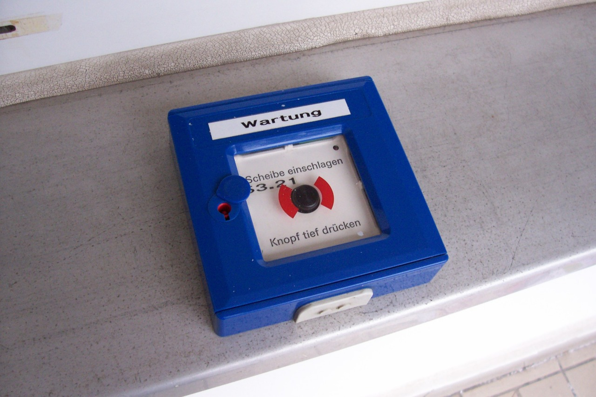
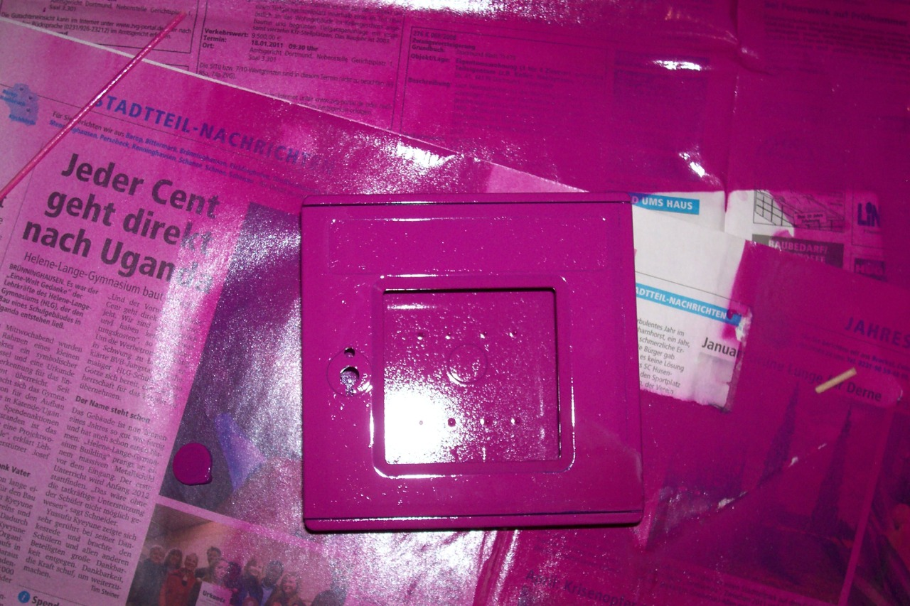
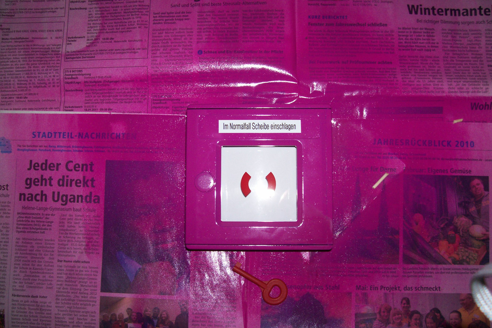
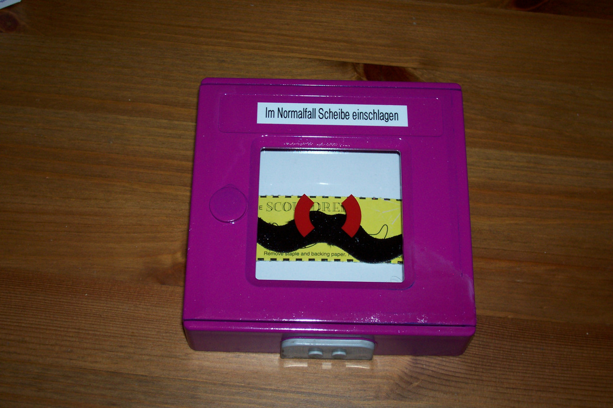
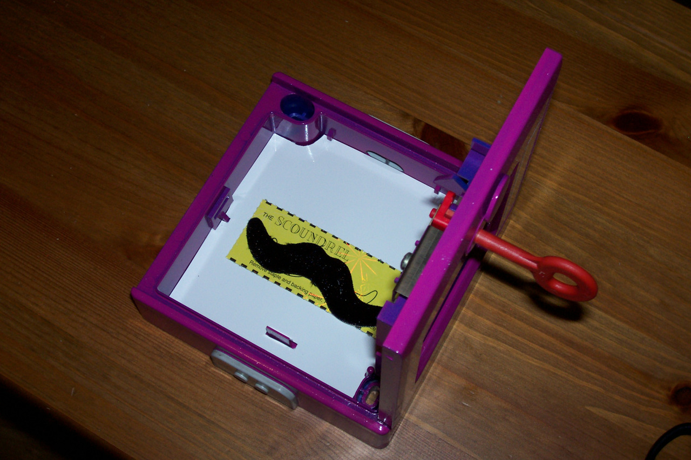
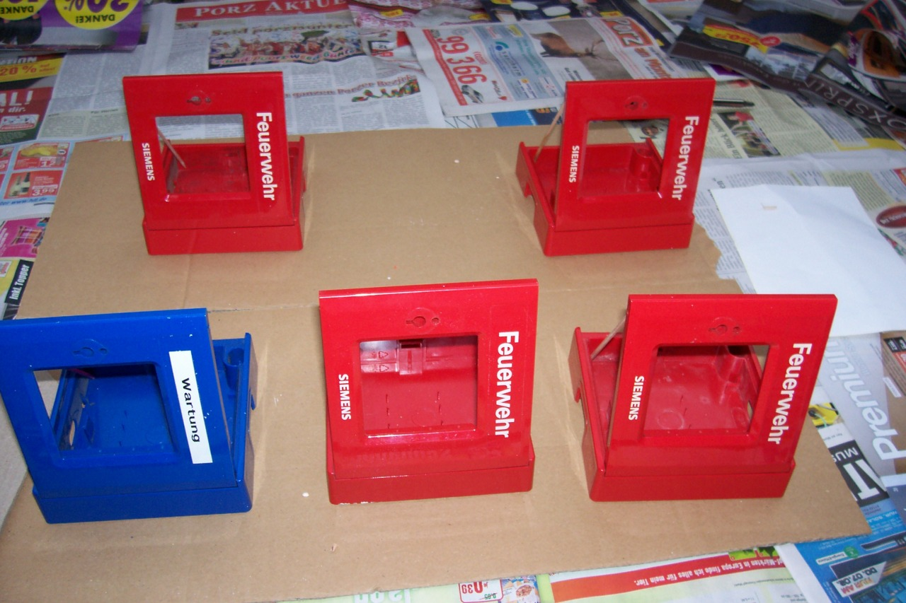
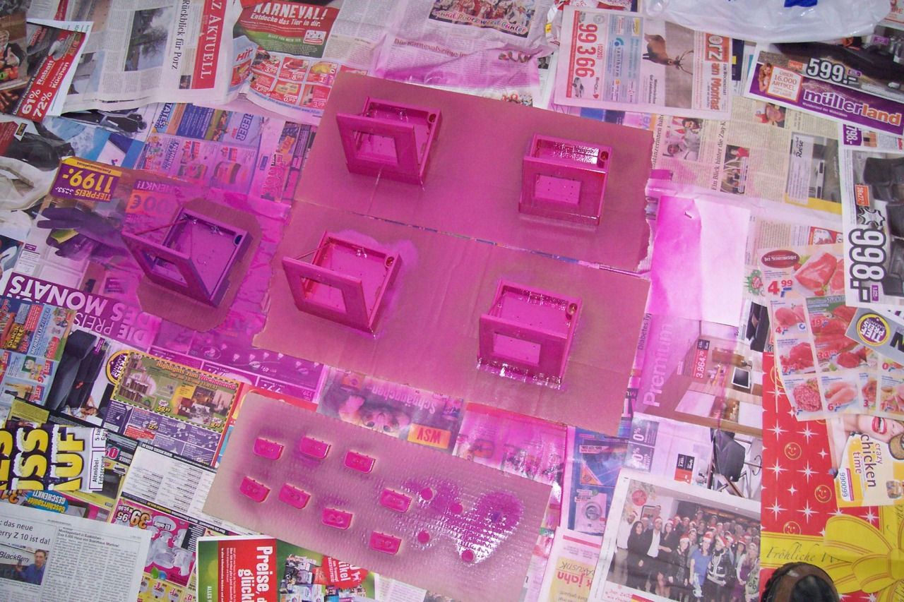
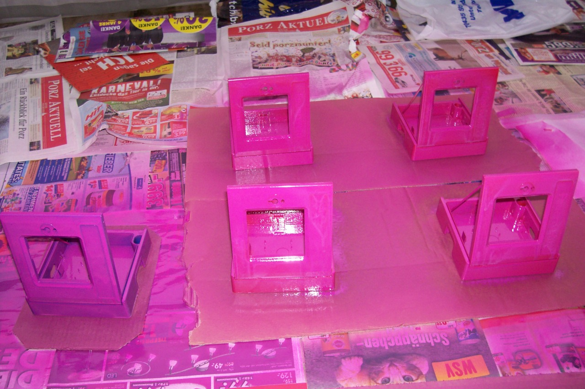
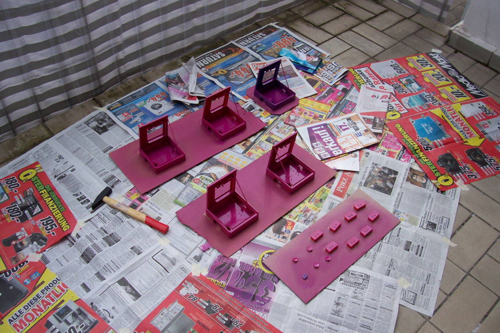
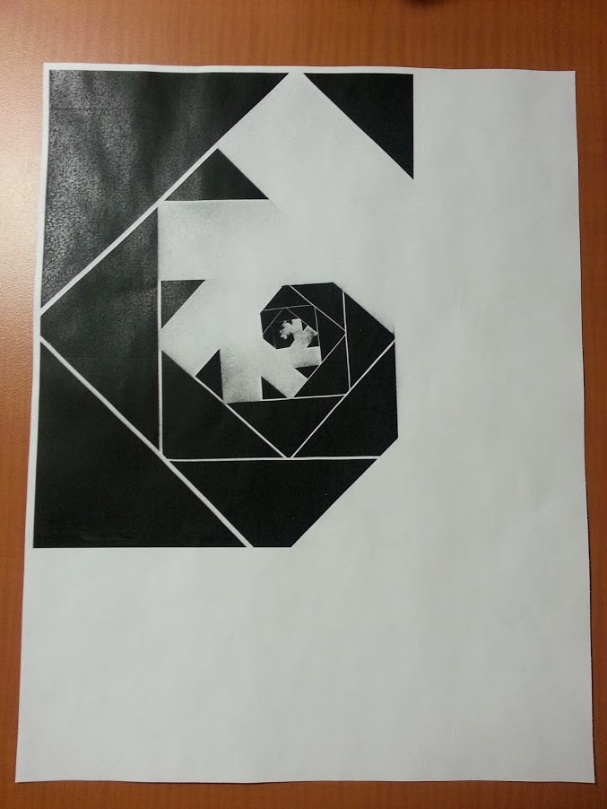

elfboi:
Heil Wurst! Wurst ist Leben!
Zis is Rüdiger von Finckendorff of ze deutsches diskordisches Reich (ddR, aka german discordian Reich, gdR) speakink. I understant zat most of you heff never heard of das Reich, zerefore I vill at least post some of our most Hol(e)y National symbols*.
Heute die Welt, morgens das Sonnensystem!
*+5 Käsefüße

Prototype - before modifications

Prototype - exploded

Spray painted

With cardboard inlay, label ("in case of normality break glass") and pane

The finished prototype with fake moustache

Inside of the prototype

Mass production begins

First layer of spray paint applied

Unfortunately, our spray can was empty midways

New spray can, second layer of paint, work in progress
bwansen:
Troll Box I
This is an Aktion 23 guerilla art project we started. The idea behind it was to have boxes looking similar to fire alarm boxes, but they are pink and labelled “In case of normality break glass” (German “Im Normalfall Scheibe einschlagen”). And instead of the fire alarm button there is some little absurd “present” inside which can be used to counter severe cases of normality, like a fake moustache.
The first prototype (pictured above) came out quite nicely, so we started the mass production already. More pictures of project “Troll Box I” will follow as soon as production continues… as well as details of “Troll Box II”. ;-)
From my experience it seems all open organizations follow the same path:
- At the beginning, a small, consistent and aligned community of people start a project in a fully transparent and open way
- The project grows, others are joining. Participants’ objectives start to differ more, the alignment level goes down
- Processes and hierarchies are put in place to formalize things that were previously happening informally
- As problems continue to grow, openness is scaled back and more restrictions are put in place
- Early adopters leave out of frustration, referring to the old days as much better
- A certain level of maturity is reached, made of a mix of open and formal processes
Openness does not scale | Accelerating reinventions (via steph)
Sorry. Fnord made me click the wrong button.
Change this posting.
This is a little game.
Reblog this posting, add some text of your own (as usual), but change the texts you quote from former versions of this post and it’s reblogs (like this one), too. It may range subtle edits (e.g. adding or correcting typos, changing some phrasing, adding some words - maybe with great impact on the meaning) to even really extensive ones (e.g. translating the whole thing into another language, completely replacing everything with completely new content, even with fake or copy-pasted discussions). And don’t you think only massive, highly visible edits are fun - you may enjoy trying to hide what you’ve done so to make others try to find out.
The longer the chain of reblogs, the funnier it may get. May. But of course, the edits may break the chain as well (by replacing these original instructions) or the whole thing gets boring all too quickly?
Let’s find out!

Make your own fractals using a photocopier!
I started with a page that had a black square in the top left. I turned it 45 degrees and photocopied it at 70% size. Then, I took the new page and repeated the process… about a dozen times.
taken in my hometown
as it turns out, just to the right is a big opening so one can go sit underneath that magnificent chestnut tree and watch the sun set across the harbour.
or one simply adjusts the filters and stops focusing on the fence.
whatever.
Dérive
I want to slap you, love you, electrify you and also be electrified. But the best I can give you is something you will appreciate for a few seconds, akin to a float in a very long parade, or a dish you will consume in an endless buffet of win and fail.
There are a million posts per day that could make you sit up, laugh, scream, cry, or burst into flame. That’s what we are all here to find, I guess. But finding it will never be enough. We will consume images and ideas until our bellies are distended and then we will be even hungrier.
So here we are again, at the dashboard, searching, one finger on the mouse wheel, trembling.
Eris laughed. Eris cried. Eris sang the body electric. Eris wiped Her ass with the written and grinned like a ninny at the spoken. Eris went low-carb-high-as-a-kite. Eris bakes NP-hard candy, grills recursive sausage, and snacks on Turing-complete bacon–avacado dip. Eris walked into a bar with a neolithic e-primate, a paleolithic freemason, and a hollow senior citizen. Eris illuminated a hypertext manuscript and hid it in Plato’s cave. Eris founded a for-profit corporate prophet. Eris employs twenty-three thousand gophers. Eris renders saturated cash. Eris’s name takes itself in vain. Eris believes in the Goddess of What but not the Goddess of Who. Eris assembles Her own furniture from the bones of priests and the screws of newlyweds. Eris double-dog dared herself to eat the whole thing.
Eris wrote a wordless gospel and instructed us to ignore it. Eris never wrote anything because She never developed Her illiteracy skills. Eris invented language for the lulz. Eris enjoys the silence, enplays the noise, and enrides the sound waves. Eris lost weight, found height, and returned depth. Eris’s cholesterol brings all the boys to the yard. Eris prescribes statins to post-zenpunk pre-zinesters. Eris televised the revolution. Eris made Episode Seven using a green screen, a blue man group, and a yellow polka-dot bikini. Eris grants no refuge to the incompetent, the helpless, the miserable; they find no sanctuary in Her arms, no superiority, no soothing to their macerated egos; She will set them among their peers.
This one time, at band camp, Eris made an outdated pop-culture reference; this other time, Eris shoved the Earth up Her pussy. Eris deletes Doctor Who torrents. Eris ground his bones to make Her bread. Eris ships Jenny Everywhere with Her OC, Holly Hopdrive. Eris wore Her sunglasses at night. Eris said “what” again. Eris moved zig. Eris helped a blind man in a dark room look for a black cat which imagined a butterfly. Eris divided by Nero, multipled by herself, and subtracted the subterranean. Eris crossed the Moebius Strip to get to the other side. Eris found the answer to life, the universe, and everything, and phrased it as a question. Eris appears hideous and beautiful, and reclaimed ugly because fnord you.
Eris struck down upon them with great meh and furious indifference. Eris invested in the economy. Eris socialized the medicines, privatized the nationalisms, and publicized the conspiracy. Eris voted for a half-methemoglobinemiac half-ginger monocular humanitarian alicorn. Eris never sexually-related to that dress. Eris flies planes into buildings for half-price. Eris lit a darkness in the candle. Eris likes a little coffee with Her lard. Eris never counted a calorie. Eris markets individualism to children. Eris performs one-act plays at the community theatre. Eris told his wife he loved her. Eris coveted Her neighbor’s ass. Eris has no intention to ever give you up or let you down. When She thinks about you, Eris touches Herself.
No philosophy withstood Her.


{kind=link}